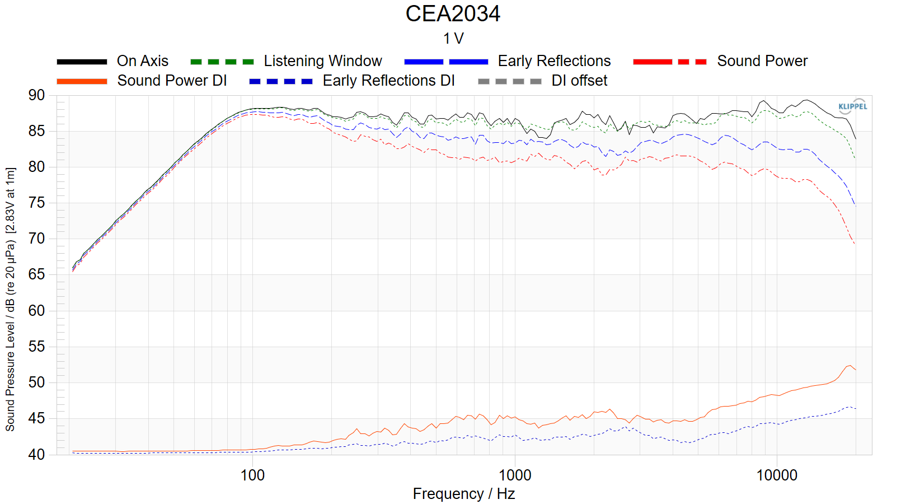
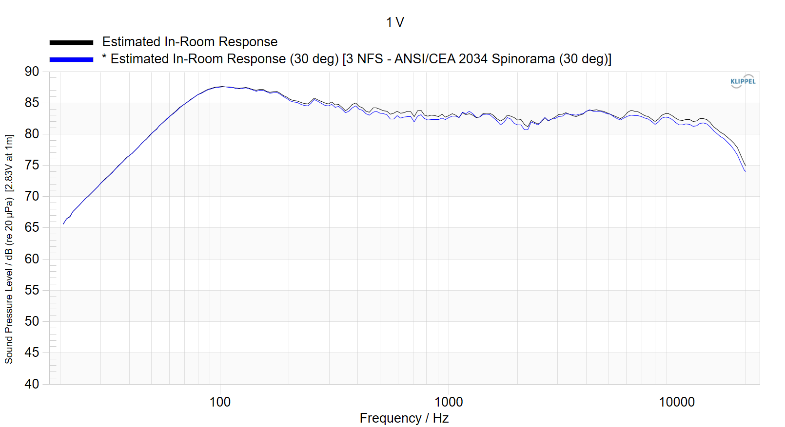

Announcing the New H T Center Channel
Any serious home theater installation needs a center channel with broad and even radiation and high power handling and intelligibility. For many situations, a single BMR monitor on its side with the tweeter rotated will be a perfectly satisfactory and economical solution. But for the most demanding HT applications there is no substitute for a high quality WMTW center that is designed specifically for broad coverage and maximum power handling.

We believe the new HT Center Channel meets that need. It features dual ScanSpeak 5.25" Revelator woofers—the smaller companions of the 8" Revelator used in the BMR tower. In addition to providing a full 6.5 mm of linear one-way excursion (9 mm maximum), the Revelators perform admirably in a sealed cabinet to maximize placement flexibility. The dedicated 4" midrange neo driver is also from ScanSpeak and offers extremely smooth and broad response to over 3 kHz. The HT's tweeter is a proprietary AMT unit with wider dispersion than typical AMT drivers or 1" dome tweeters. Finally, a sophisticated 20-element crossover blends the drivers to produce an extremely even response both on axis and far off axis.
Below are Klippel tests of the on-axis response and directivity, and the predicted response in a typical room. Note how closely the predicted room response 30 degrees off axis matches the on axis response.
Measurements
On Axis Response and Directivity

Predicted Room Response

We have made every effort to keep pricing as low as possible despite the high cost of the drivers, crossover, and curved cabinet used in the HT Center. Three finishes are available--piano black, natural low-gloss walnut, and mirror ebony (pictured above). Past and future owners of HT towers, BMR towers, or BMR monitors may puchase piano black and walnut centers for $1,200, and ebony centers for $1,300. Pricing for purchasers who do not own the towers or monitors will be $1,400 for walnut and piano black, and $1,500 for ebony. (All pricing is plus shipping.) The HT Centers are due to arrive in Late January. To order, just write Dennis at info@philharmonicaudio.com.
Specifications
| Cabinet | Mirror Ebony, Piano Black, or Natural Walnut |
| Tweeter | Proprietary Air Motion |
| Midrange | ScanSpeak 10f/4424G |
| Woofer | ScanSpeak 5.25" Revelator |
| Frequency Response | 55 Hz - 20kHz (+ 1.5 / - 3db) Anechoic |
| Sensitivity | 88 dB (2.83v/1M) |
| Box Alignment | Sealed |
| Dimensions | 20.5" W X 10 7/8" H X 10 7/8" D |
| Weight | 35 lbs |
| Impedance | 4 Ohms |
| Crossover | Linkwitz-Riley 2nd Order Acoustic at 490 Hz, Linkwitz-Riley 4th Order Acoustic at 3,000 Hz |